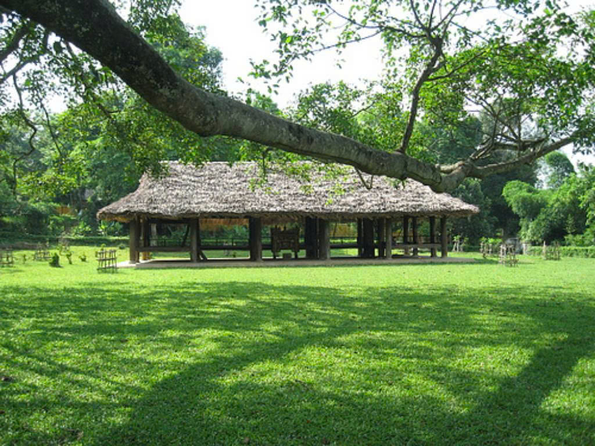
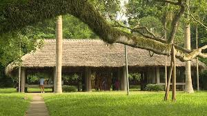

Đình Hồng Thái cách đình Tân Trào gần 1 km trên đường đi Sơn Dương, đình được xây dựng tại địa phận của làng Cả, xã Tân Trào. Năm 1919, đình có tên là đình Làng Cả hay đình Kim Trận. Đình Hồng Thái còn là trạm giao liên và là nơi huấn luyện quân sự trong suốt thời kỳ kháng chiến. Đình còn là điểm dừng chân của các đại biểu toàn quốc về dự Quốc dân Đại hội, là trạm thường trực của "An toàn khu của Trung ương đóng ở Tân Trào".

Đình Hồng Thái
Chị Lò Thị Tâm, hướng dẫn viên Khu di tích lịch quốc gia đặc biệt Tân Trào cho biết, trước năm 1945, đình có tên là đình Kim Trận. Sau Cách mạng, thể theo nguyện vọng của nhân dân, đã lấy tên liệt sĩ Phạm Hồng Thái đặt tên cho đình và từ đó đình mang tên Hồng Thái.

Đình Hồng Thái
Đình Hồng Thái được dựng vào năm 1919, bằng vật liệu thuần gỗ, theo kiểu kiến trúc nhà sàn miền núi, ba gian, hai chái, mái lợp lá cọ. Phía trên có một sàn lửng được chia làm hai phần: Thượng cung là nơi để đồ cúng tế, vọng cung để đồ tế khí. Khi về đến Tân Trào, đình Hồng Thái là nơi dừng chân đầu tiên của Người.

Đình Hồng Thái
|

Lán Nà Nưa
|

Lán Hang Bòng
|

Flaminggo Tân Trào
|

Cây đa Tân Trào
|

Đình Tân Trào
|
© 2021 Khu di tích lịch sử Tân Trào
Địa chỉ: Tân Trào, Sơn Dương, Tuyên Quang
Điện thoại:liên hệ gr 4